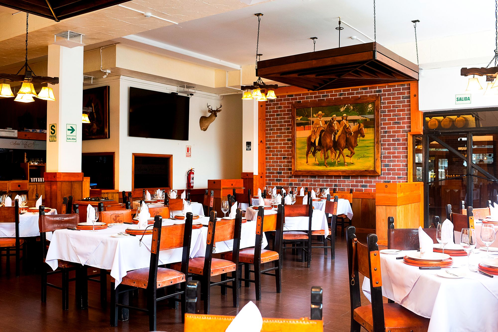
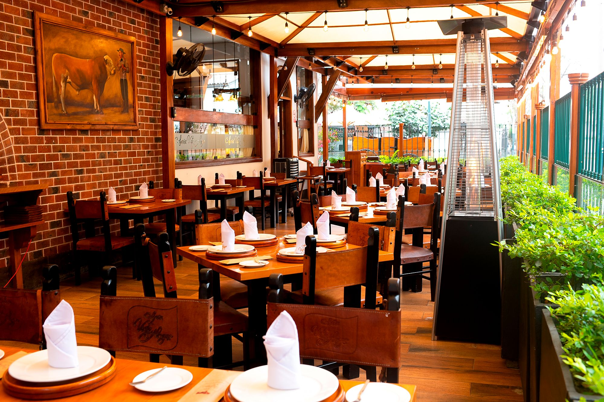
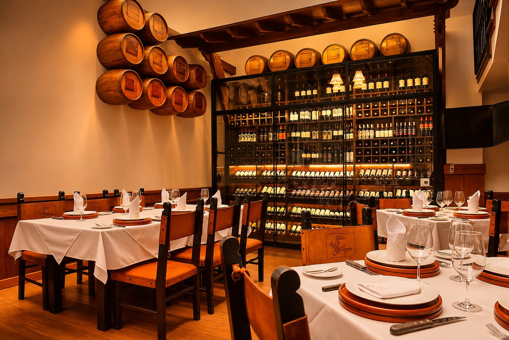
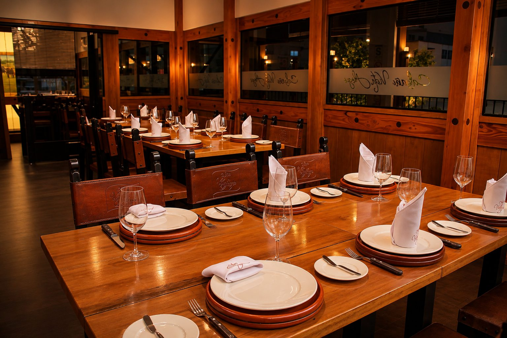
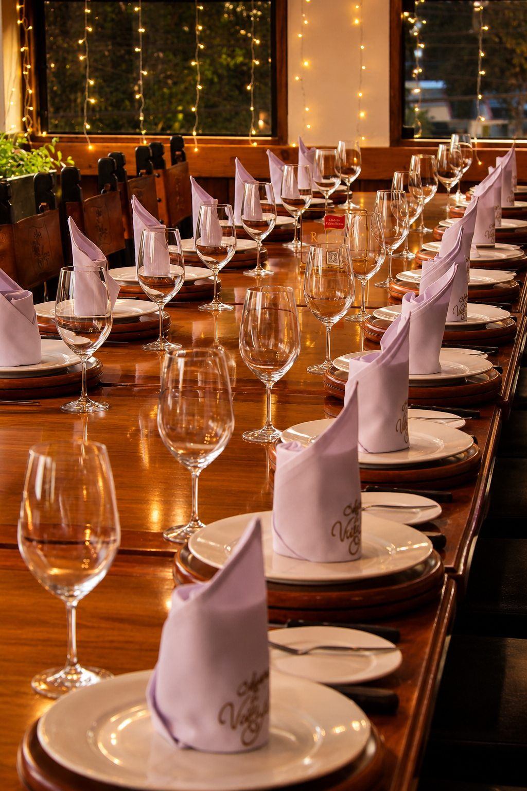
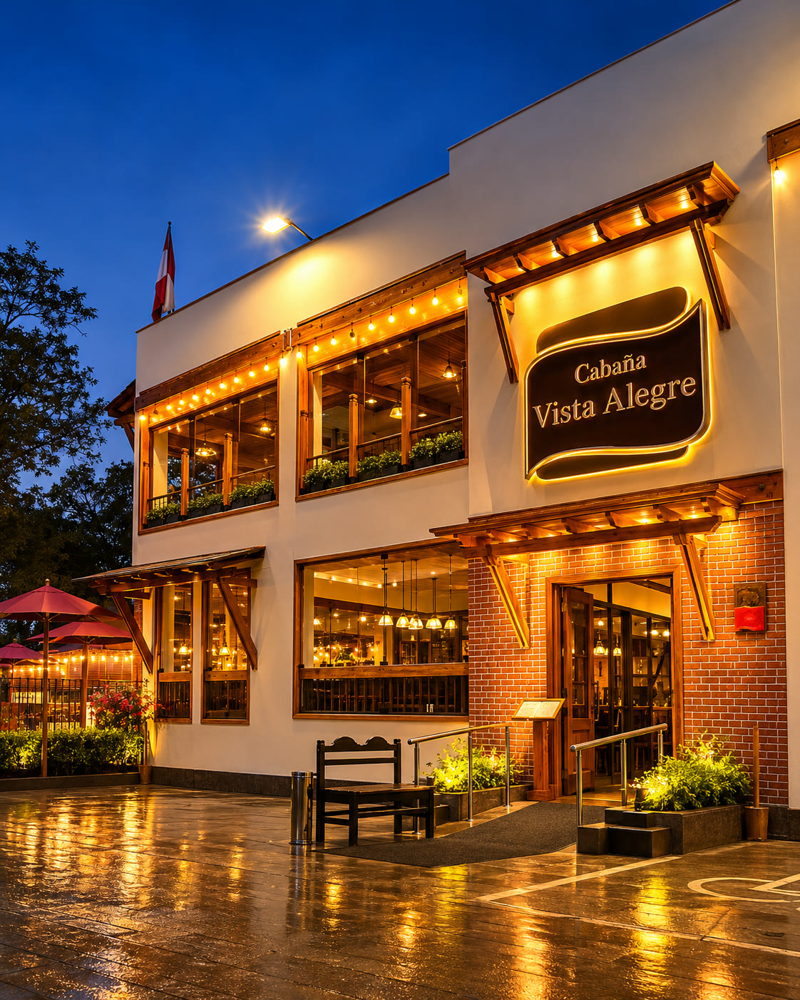

El fuego tiene historia.
Desde 2006, una casa dedicada a la buena carne en Chacarilla. Hoy, nuestra carta reúne cortes Angus, Wagyu y Tomahawk.
Los elegidos de la casa
Los tres cortes que más piden nuestros comensales, y una entrada para empezar.
Nuestra carta
Cortes seleccionados, especialidades para compartir y cócteles de autor.
No encontramos ese plato. Prueba con otra palabra.
Para cada ocasión
Madera, ladrillo y luz cálida. De noche, la fachada y la terraza se encienden juntas.





Conoce la casa antes de venir
Del salón a la cava, el salón privado y la terraza: un paseo de 30 segundos por Cabaña Vista Alegre.
Celebraciones
Cumpleaños, aniversarios y reuniones que merecen una buena mesa. Cuéntanos qué estás planeando.
Servicio de torta: S/ 50Consultar celebración →Grupos y empresas
Para grupos grandes y reuniones de trabajo, coordinamos tu mesa de forma personalizada.
Coordinar →Trae tu vino
Puedes traer tu botella favorita para acompañar tu parrilla.
Descorche: S/ 40 por botella de 750 ml. Corcho libre en vinos de 750 ml presentados al ingresar.Ver condiciones →Menú kids
Lomo fino o milanesa de pollo, con papas o spaghetti, bebida y bola de helado.
Desde S/ 75
El sueño que dio origen a 20 años de éxito en carnes y parrillas
La historia de Cabaña Vista Alegre comenzó con el sueño de Demóstenes Fermín con un viaje que hizo a Argentina y la experiencia que tuvo en el reconocido restaurante “Cabaña Las Lilas” la misma que marcó su visión de lo que quería ofrecer en Lima… carnes de calidad, una buena atención y una experiencia gastronómica especial. Así, tras meses de búsqueda, encontró una casa frente a un parque en Chacarilla. Su antiguo propietario, el ingeniero Enrique Ramírez, le sugirió el nombre Vista Alegre, en honor a la vista que había disfrutado durante años y el Sr. Fermín, inspirado también por aquella experiencia que tuvo en Argentina, decidió llamarlo Cabaña Vista Alegre, fusionando el nombre de Argentina y lo sugerido por el ex propietario de la casa en Surco.
En noviembre del 2006, el restaurante abrió sus puertas y comenzó una historia que hoy cumple 20 años de tradición, esfuerzo y evolución. A lo largo de estas dos décadas, las carnes y parrillas han sido las protagonistas de una propuesta que ha crecido con nuevos cortes argentinos y americanos, entradas, coctelería y una selección de vinos. Pero el encanto de Cabaña Vista Alegre va más allá de su propuesta gastronómica y es estar en un ambiente cálido, en los encuentros familiares y empresariales, en ser ese lugar al que los clientes regresan para compartir momentos especiales alrededor de la mesa.
Hoy, con la participación de una nueva generación de la familia Fermín, el restaurante continúa renovándose sin perder la esencia que le dio origen: la pasión por las carnes, el compromiso con la calidad y la tradición de recibir a cada cliente como en casa.
Después de 20 años, Cabaña Vista Alegre sigue mirando hacia el futuro, fiel a su historia y con el propósito de continuar creando experiencias memorables de una buena parrilla.
- 2006Abre Cabaña Vista Alegre en Chacarilla, Surco.
- 2024Nueva fachada: la casa y la terraza se iluminan de noche, y llega el Wagyu a la carta.
- 2025El salón estrena ladrillo rococho, la barra crece y llega una carta de vinos argentinos, chilenos e italianos.
- 2026Veinte años, con una nueva generación: Gabriela y Vladimir Fermín acompañan a su padre en la gestión.
Es el resultado de la constancia y el esfuerzo diario.Demóstenes Fermín, fundador, sobre sus 20 años · revista Cosas, 2026
Reserva tu mesa
Reserva en línea en pocos pasos: eliges día, horario y cuántas personas vienen, y te llega la confirmación a tu correo.
- Los horarios disponibles son los de atención del restaurante.
- Cuéntanos si celebras algo: preparamos tu mesa para la ocasión.
- Para grupos de más de 10 personas, te atendemos de forma personalizada.
Reserva en línea
Elige día, horario y cuántas personas vienen en nuestro sistema de reservas.
- Elige el día y la hora
- Indica cuántas personas vienen
- Recibe la confirmación en tu correo
¿Más de 10 personas? Llámanos al 944 467 705
Te esperamos en Chacarilla
- Dirección
- Calle Punta Pejerrey 190, Santiago de Surco
Altura de la cuadra 1 de Caminos del Inca, a espaldas del grifo Primax - Horario
- Lunes a sábado: 12:00 p. m. – 12:00 a. m.
Domingo: 12:00 p. m. – 11:00 p. m. - Reservas
- 944 467 705
reservas@restaurante-vistaalegre.com - 4.5 de 5 · 825 opiniones · ver en Google Maps